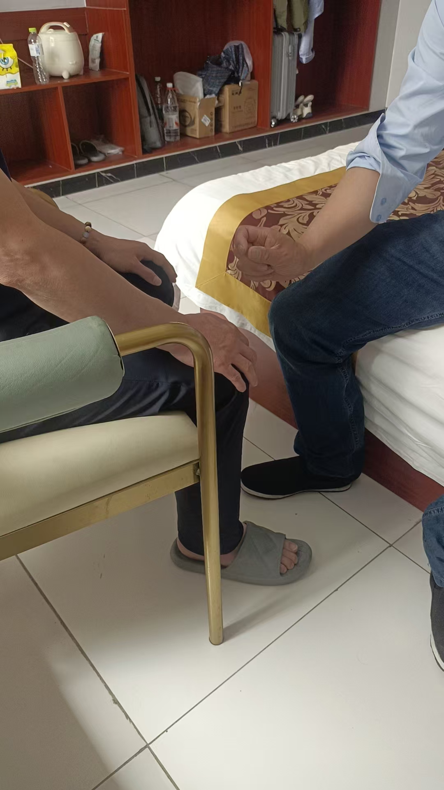
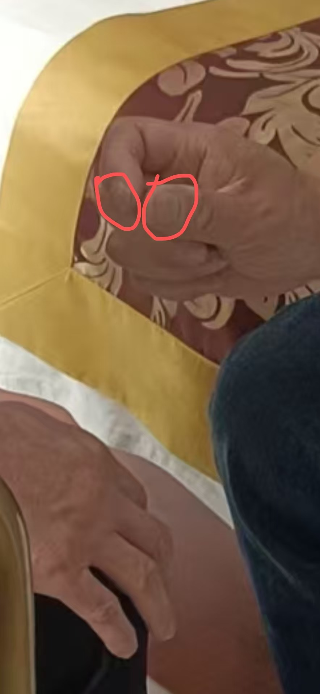
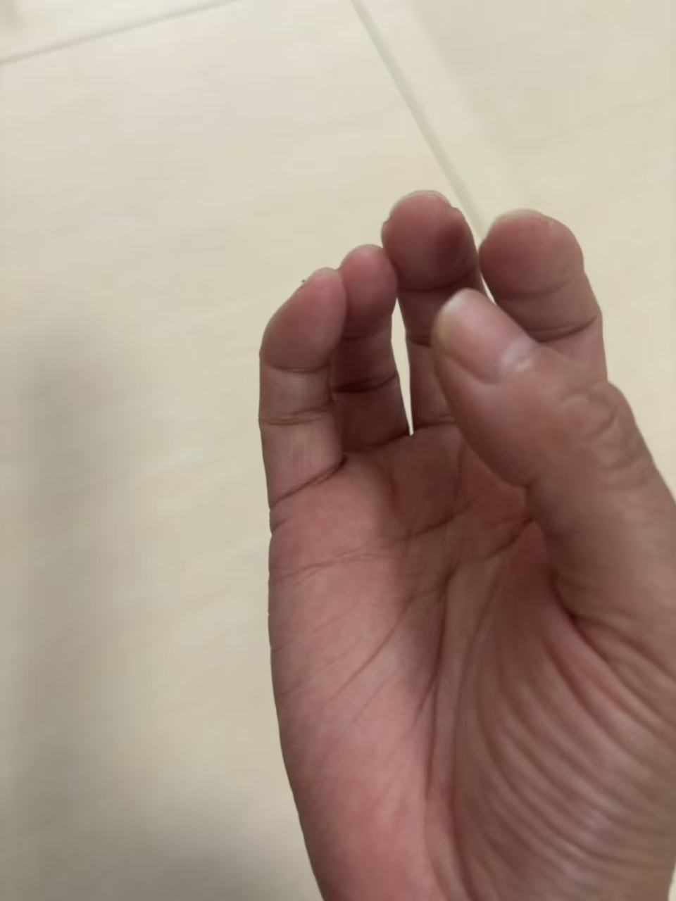
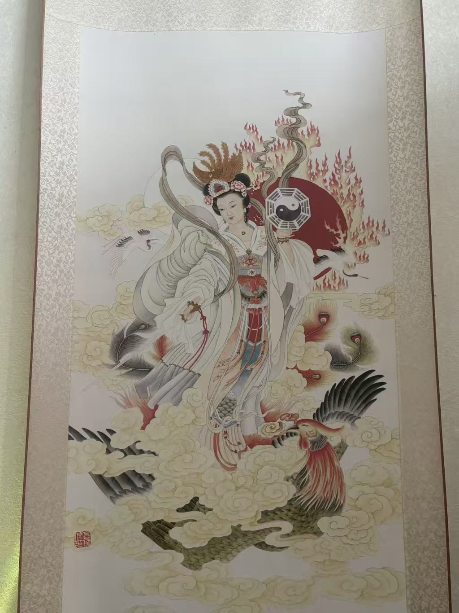

20260524意针
修炼修行 原始对话记录
大部分学生已经离开
继续学习虚空针针灸
@紫鸢真人 意针，
基础功能谁学谁会
有绿色金色光
所以说，在我这里，每个孩子都是神童
意针要对穴位吗
绝对没有淘汰制一说
[强][强][强]
意针不需要认识穴位
而是阿是穴
就是哪里痛针哪里，哪里不舒服针哪里
阿是穴就是疼痛点，不是单一穴位
@谢芳玲 眼功太厉害了[强][强][强]
这学生第一天学就开悟了
口若悬河
讲修炼方法
以前没接触过
太厉害了👍👍👍
所以说，这些学生都是高维来的
他们都互相看到了对方的原神
施针的这个，修出的就是绿光
金针是我送给他的
所以看到的是绿光带金

有图像
食指有一个在练太极
修的果位层次不一样，颜色也不一样
广州二师兄是天蓝色
拇指有个头像
我是紫色
嗯嗯

看的见针吗

哪里痛针哪里
大部分学生已经离开。留下的，继续学习虚空针针灸。
有人在群里问，意针要对穴位吗。
师父答，意针不需要认识穴位，而是阿是穴。就是哪里痛针哪里，哪里不舒服针哪里。阿是穴就是疼痛点，不是单一穴位。
就这几句。
他还说，基础功能谁学谁会，有绿色金色光。所以在我这里，每个孩子都是神童。
没有淘汰制一说。这句放在前面，像先给人一颗定心丸。
然后是截图。有图像，食指上有一个在练太极。修的果位层次不一样，颜色也不一样。广州二师兄是天蓝色。拇指有个头像。我是紫色。
施针的这个，修出的就是绿光。金针是我送给他的，所以看到的是绿光带金。
有人问，看的见针吗。底下的几张图，我没看到针，只看到手指。
还有一段，说这学生第一天学就开悟了，口若悬河，讲修炼方法，以前没接触过。师父感叹，这些学生都是高维来的，他们都互相看到了对方的原神。
页末是眼功。@谢芳玲，眼功太厉害了。这学生第一天学就开悟了。
针有颜色，颜色有层次。层次这个词，在别处说的是果位。修到什么位置，光就是什么颜色。绿、金、天蓝、紫，各归各位，像一排深浅不同的线。